最新输入方法：12个固定案例
12张完整场景 + 10张原定位局部。全部读取已完成32方法中的实际结果，没有新增模型或推理。六列固定：RGB、旧EXPAND、DOMAIN、TENSOR、BUILDING、RELATIVE。每例全图和局部都沿用原全景RAW的P2–P98色限，灰色原缺测范围不变。
方法起点：DOMAIN是既有候选域、背景参照和地图保护组合；后三列分别从同一COMPACT新增处理出发，用方向、真实建筑覆盖、相对纹理概率调节保护。它们并非依次叠加。BUILDING在旧36场没有纯建筑覆盖时精确保持TENSOR。
三个输入连通孤立对照的定位格原本没有COMPACT新增量，零变化会如实注明。相对纹理的高亮道路误判有所减轻，但部分道路和屋顶仍有取舍；本页同时保留不利场景。网页只含JPEG预览，300dpi PNG保存在本地目录。
01 · 周口 · 2021-05-24
原道路风险点 · 原有效率 100.0% · 原全景色限 10.098–26.433 μg/m³
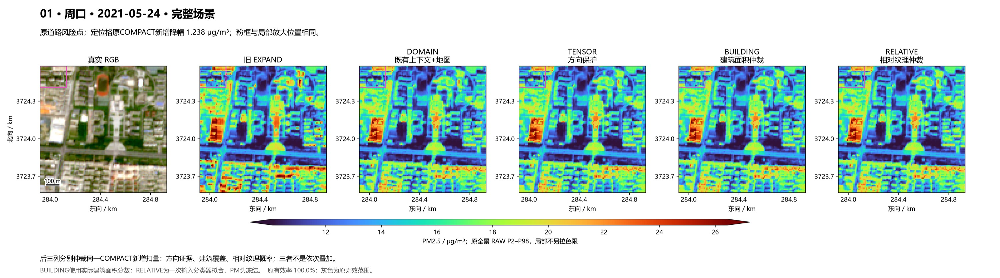
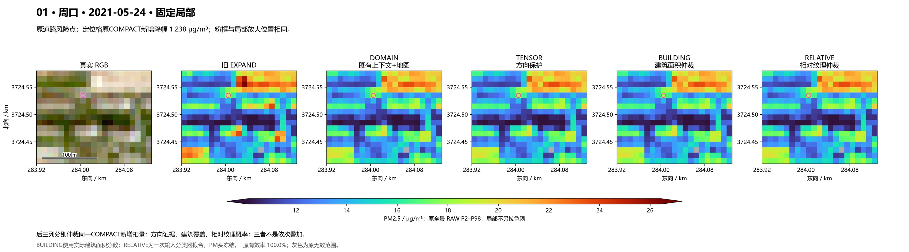
本场实际差值与零变化
| 方法 | 相对旧EXPAND：最小/平均/最大 | 相对TENSOR变化格数 | 定位格PM |
|---|---|---|---|
| EXPAND_LINE_TAIL | 0.0000 / 0.0000 / 0.0000 | 1079 | 18.986 |
| DOMAIN_CONTEXT_MAP | -11.4425 / -0.2688 / 0.0000 | 9 | 18.986 |
| COMPACT_TENSOR_GUARD | -11.4425 / -0.2690 / 0.0000 | 0 | 18.160 |
| COMPACT_BUILDING_TENSOR | -11.4425 / -0.2691 / 0.0000 | 5 | 18.160 |
| COMPACT_RELATIVE_TEXTURE | -11.4425 / -0.2691 / 0.0000 | 9 | 17.891 |
02 · 济宁 · 2021-05-24
原道路风险点 · 原有效率 97.9% · 原全景色限 17.456–31.982 μg/m³
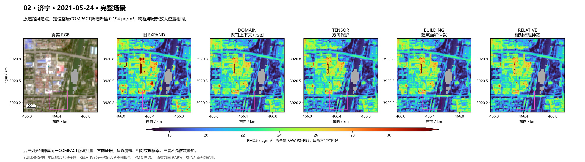
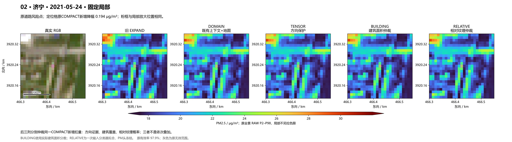
本场实际差值与零变化
| 方法 | 相对旧EXPAND：最小/平均/最大 | 相对TENSOR变化格数 | 定位格PM |
|---|---|---|---|
| EXPAND_LINE_TAIL | 0.0000 / 0.0000 / 0.0000 | 659 | 24.483 |
| DOMAIN_CONTEXT_MAP | -13.1861 / -0.1370 / 0.0000 | 23 | 24.483 |
| COMPACT_TENSOR_GUARD | -13.1861 / -0.1379 / 0.0000 | 0 | 24.390 |
| COMPACT_BUILDING_TENSOR | -13.1861 / -0.1380 / 0.0000 | 8 | 24.390 |
| COMPACT_RELATIVE_TEXTURE | -13.1861 / -0.1380 / 0.0000 | 14 | 24.327 |
03 · 永州 · 2020-02-17
原道路风险点 · 原有效率 91.2% · 原全景色限 18.817–27.057 μg/m³
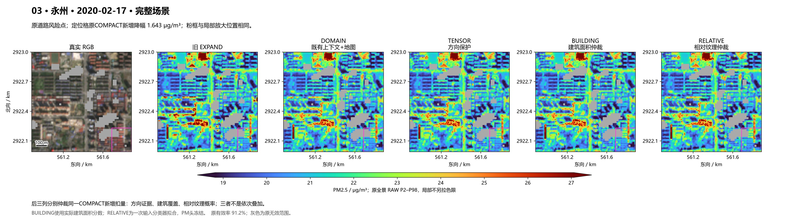
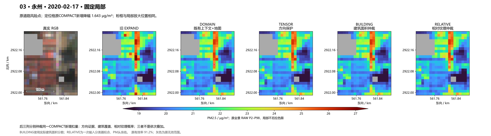
本场实际差值与零变化
| 方法 | 相对旧EXPAND：最小/平均/最大 | 相对TENSOR变化格数 | 定位格PM |
|---|---|---|---|
| EXPAND_LINE_TAIL | 0.0000 / 0.0000 / 0.0000 | 244 | 25.249 |
| DOMAIN_CONTEXT_MAP | -6.4517 / -0.0645 / 0.0000 | 3 | 25.249 |
| COMPACT_TENSOR_GUARD | -6.4517 / -0.0647 / 0.0000 | 0 | 23.940 |
| COMPACT_BUILDING_TENSOR | -6.4517 / -0.0647 / 0.0000 | 1 | 23.867 |
| COMPACT_RELATIVE_TEXTURE | -6.4517 / -0.0647 / 0.0000 | 2 | 23.729 |
04 · 北京窗口B · 2022-10-06
原道路风险点 · 原有效率 100.0% · 原全景色限 13.697–22.240 μg/m³
本场BUILDING整景与TENSOR完全相同，属于预定无纯建筑覆盖的分支行为。
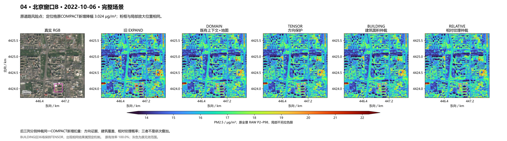
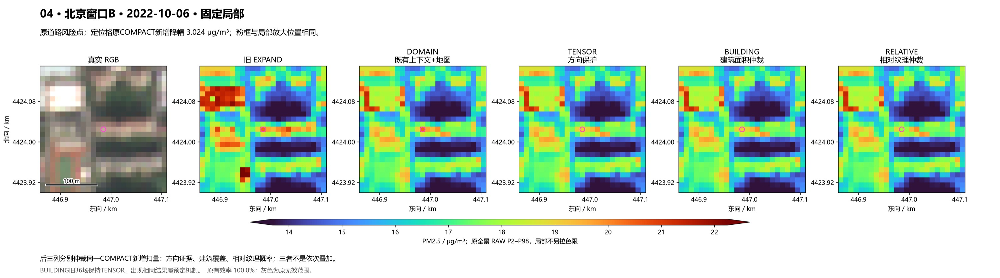
本场实际差值与零变化
| 方法 | 相对旧EXPAND：最小/平均/最大 | 相对TENSOR变化格数 | 定位格PM |
|---|---|---|---|
| EXPAND_LINE_TAIL | 0.0000 / 0.0000 / 0.0000 | 1613 | 20.382 |
| DOMAIN_CONTEXT_MAP | -8.5491 / -0.0544 / 0.0000 | 298 | 20.382 |
| COMPACT_TENSOR_GUARD | -8.5491 / -0.0583 / 0.0000 | 0 | 19.070 |
| COMPACT_BUILDING_TENSOR | -8.5491 / -0.0583 / 0.0000 | 0 | 19.070 |
| COMPACT_RELATIVE_TEXTURE | -8.5491 / -0.0585 / 0.0000 | 19 | 17.996 |
05 · 北京窗口A · 2022-04-07
输入连通孤立对照 · 原有效率 98.9% · 原全景色限 26.937–40.216 μg/m³
定位格的COMPACT新增量为零，TENSOR / BUILDING / RELATIVE在此格都没有新增变化。图内其他位置仍可能变化。
本场BUILDING整景与TENSOR完全相同，属于预定无纯建筑覆盖的分支行为。
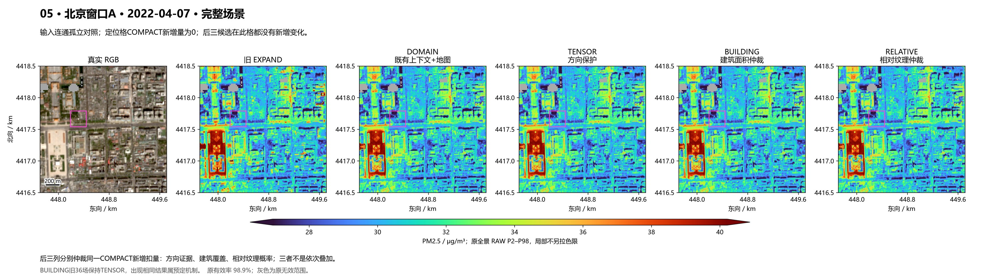
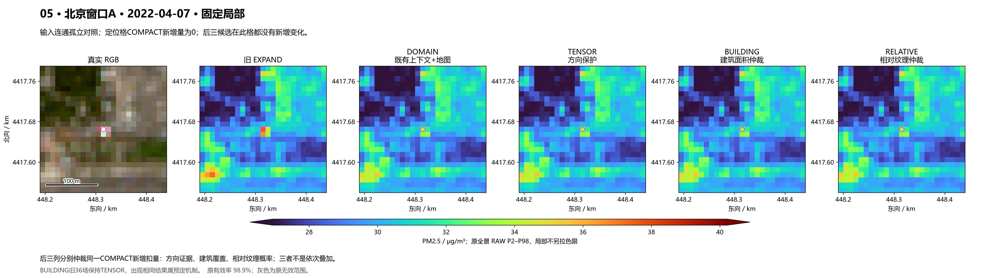
本场实际差值与零变化
| 方法 | 相对旧EXPAND：最小/平均/最大 | 相对TENSOR变化格数 | 定位格PM |
|---|---|---|---|
| EXPAND_LINE_TAIL | 0.0000 / 0.0000 / 0.0000 | 2496 | 37.568 |
| DOMAIN_CONTEXT_MAP | -21.8663 / -0.1150 / 0.0000 | 407 | 33.385 |
| COMPACT_TENSOR_GUARD | -21.8663 / -0.1212 / 0.0000 | 0 | 33.385 |
| COMPACT_BUILDING_TENSOR | -21.8663 / -0.1212 / 0.0000 | 0 | 33.385 |
| COMPACT_RELATIVE_TEXTURE | -21.8663 / -0.1213 / 0.0000 | 30 | 33.385 |
06 · 济宁 · 2021-05-24
输入连通孤立对照 · 原有效率 100.0% · 原全景色限 17.953–36.634 μg/m³
定位格的COMPACT新增量为零，TENSOR / BUILDING / RELATIVE在此格都没有新增变化。图内其他位置仍可能变化。
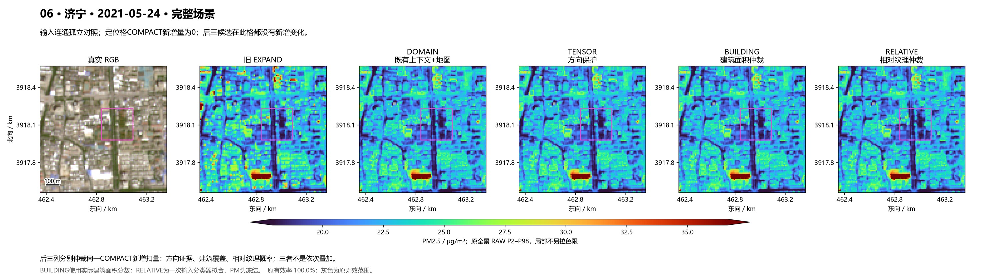
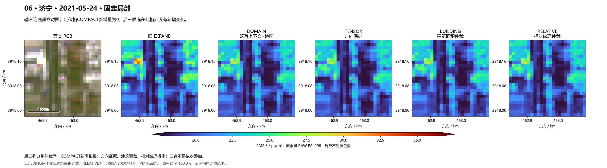
本场实际差值与零变化
| 方法 | 相对旧EXPAND：最小/平均/最大 | 相对TENSOR变化格数 | 定位格PM |
|---|---|---|---|
| EXPAND_LINE_TAIL | 0.0000 / 0.0000 / 0.0000 | 1409 | 26.053 |
| DOMAIN_CONTEXT_MAP | -60.3235 / -0.3454 / 0.0000 | 21 | 24.361 |
| COMPACT_TENSOR_GUARD | -60.3235 / -0.3464 / 0.0000 | 0 | 24.361 |
| COMPACT_BUILDING_TENSOR | -60.3235 / -0.3466 / 0.0000 | 12 | 24.361 |
| COMPACT_RELATIVE_TEXTURE | -60.3235 / -0.3465 / 0.0000 | 17 | 24.361 |
07 · 南通 · 2021-02-17
输入连通孤立对照 · 原有效率 92.5% · 原全景色限 6.316–15.527 μg/m³
定位格的COMPACT新增量为零，TENSOR / BUILDING / RELATIVE在此格都没有新增变化。图内其他位置仍可能变化。
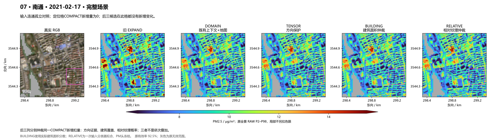
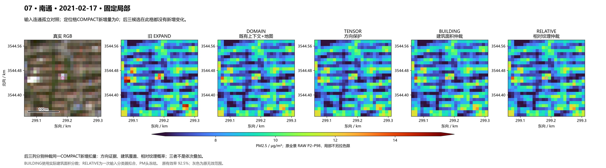
本场实际差值与零变化
| 方法 | 相对旧EXPAND：最小/平均/最大 | 相对TENSOR变化格数 | 定位格PM |
|---|---|---|---|
| EXPAND_LINE_TAIL | 0.0000 / 0.0000 / 0.0000 | 357 | 13.739 |
| DOMAIN_CONTEXT_MAP | -9.0775 / -0.0996 / 0.0000 | 3 | 11.142 |
| COMPACT_TENSOR_GUARD | -9.0775 / -0.0997 / 0.0000 | 0 | 11.142 |
| COMPACT_BUILDING_TENSOR | -9.0775 / -0.0997 / 0.0000 | 0 | 11.142 |
| COMPACT_RELATIVE_TEXTURE | -9.0775 / -0.0997 / 0.0000 | 0 | 11.142 |
08 · 济南 · 2021-05-29
原残留对象 P12 · 原有效率 100.0% · 原全景色限 20.529–41.833 μg/m³
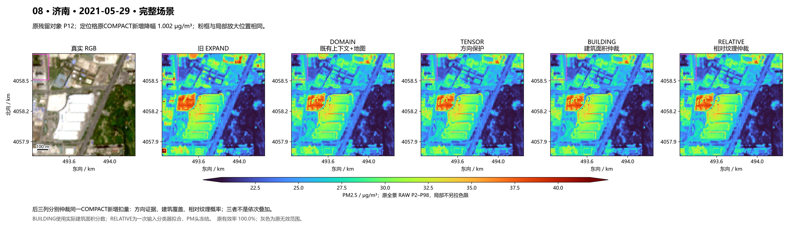
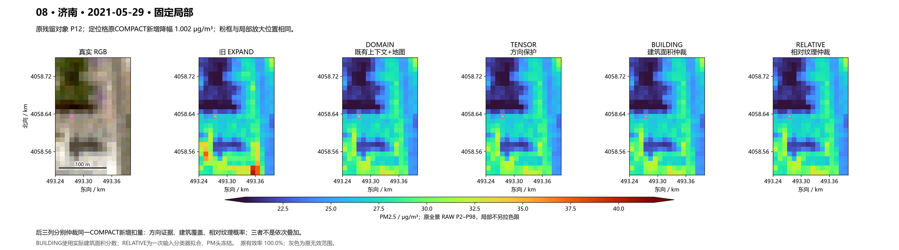
本场实际差值与零变化
| 方法 | 相对旧EXPAND：最小/平均/最大 | 相对TENSOR变化格数 | 定位格PM |
|---|---|---|---|
| EXPAND_LINE_TAIL | 0.0000 / 0.0000 / 0.0000 | 693 | 28.653 |
| DOMAIN_CONTEXT_MAP | -10.7207 / -0.2187 / 0.0000 | 24 | 28.653 |
| COMPACT_TENSOR_GUARD | -10.7207 / -0.2194 / 0.0000 | 0 | 28.176 |
| COMPACT_BUILDING_TENSOR | -10.7207 / -0.2194 / 0.0000 | 9 | 27.651 |
| COMPACT_RELATIVE_TEXTURE | -10.7207 / -0.2195 / 0.0000 | 24 | 27.813 |
09 · 大庆 · 2020-12-04
原残留对象 P09 · 原有效率 98.7% · 原全景色限 21.260–34.283 μg/m³
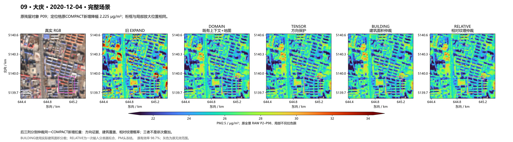
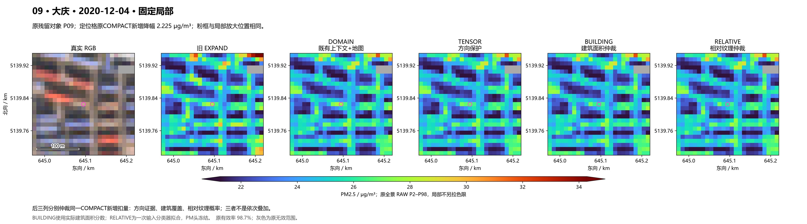
本场实际差值与零变化
| 方法 | 相对旧EXPAND：最小/平均/最大 | 相对TENSOR变化格数 | 定位格PM |
|---|---|---|---|
| EXPAND_LINE_TAIL | 0.0000 / 0.0000 / 0.0000 | 1344 | 27.749 |
| DOMAIN_CONTEXT_MAP | -11.4091 / -0.3581 / 0.0000 | 51 | 27.749 |
| COMPACT_TENSOR_GUARD | -11.4091 / -0.3602 / 0.0000 | 0 | 26.843 |
| COMPACT_BUILDING_TENSOR | -11.4091 / -0.3606 / 0.0000 | 11 | 26.074 |
| COMPACT_RELATIVE_TEXTURE | -11.4091 / -0.3608 / 0.0000 | 21 | 25.864 |
10 · 淄博 · 2021-09-13
原残留对象 P14 · 原有效率 99.9% · 原全景色限 31.476–40.137 μg/m³
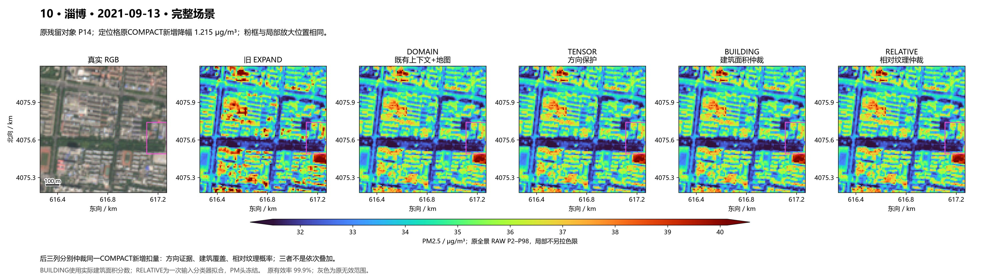
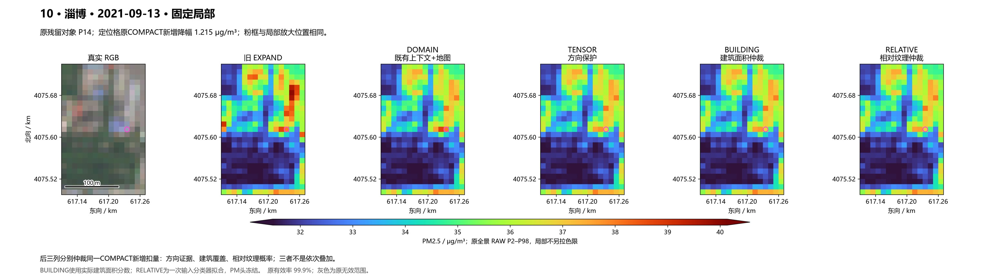
本场实际差值与零变化
| 方法 | 相对旧EXPAND：最小/平均/最大 | 相对TENSOR变化格数 | 定位格PM |
|---|---|---|---|
| EXPAND_LINE_TAIL | 0.0000 / 0.0000 / 0.0000 | 739 | 38.020 |
| DOMAIN_CONTEXT_MAP | -6.7287 / -0.1255 / 0.0000 | 13 | 38.020 |
| COMPACT_TENSOR_GUARD | -6.7287 / -0.1260 / 0.0000 | 0 | 36.919 |
| COMPACT_BUILDING_TENSOR | -6.7287 / -0.1260 / 0.0000 | 4 | 36.846 |
| COMPACT_RELATIVE_TEXTURE | -6.7287 / -0.1260 / 0.0000 | 7 | 36.823 |
11 · 曲靖 · 2022-03-07
已有工业环境 · 原有效率 100.0% · 原全景色限 19.177–38.530 μg/m³
本场BUILDING整景与TENSOR完全相同，属于预定无纯建筑覆盖的分支行为。
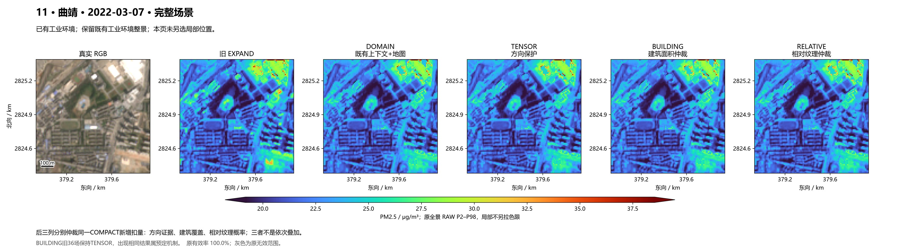
本场实际差值与零变化
| 方法 | 相对旧EXPAND：最小/平均/最大 | 相对TENSOR变化格数 | 定位格PM |
|---|---|---|---|
| EXPAND_LINE_TAIL | 0.0000 / 0.0000 / 0.0000 | 510 | 未另指定 |
| DOMAIN_CONTEXT_MAP | -19.9293 / -0.1446 / 0.0000 | 23 | 未另指定 |
| COMPACT_TENSOR_GUARD | -19.9293 / -0.1459 / 0.0000 | 0 | 未另指定 |
| COMPACT_BUILDING_TENSOR | -19.9293 / -0.1459 / 0.0000 | 0 | 未另指定 |
| COMPACT_RELATIVE_TEXTURE | -19.9293 / -0.1460 / 0.0000 | 22 | 未另指定 |
12 · 鞍山 · 2022-10-05
已有工业环境 · 原有效率 99.9% · 原全景色限 0.952–9.507 μg/m³
本场BUILDING整景与TENSOR完全相同，属于预定无纯建筑覆盖的分支行为。
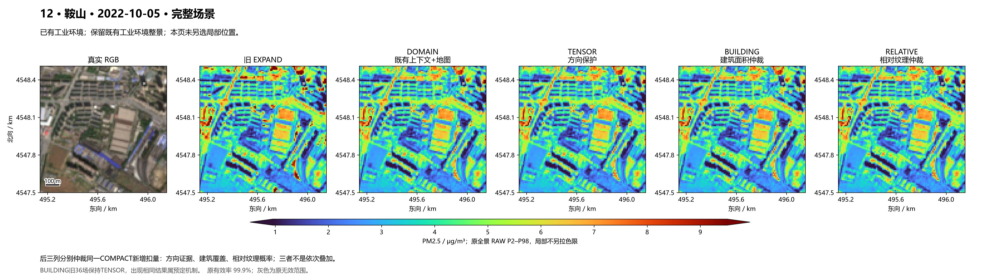
本场实际差值与零变化
| 方法 | 相对旧EXPAND：最小/平均/最大 | 相对TENSOR变化格数 | 定位格PM |
|---|---|---|---|
| EXPAND_LINE_TAIL | 0.0000 / 0.0000 / 0.0000 | 264 | 未另指定 |
| DOMAIN_CONTEXT_MAP | -6.5638 / -0.0497 / 0.0000 | 21 | 未另指定 |
| COMPACT_TENSOR_GUARD | -6.5638 / -0.0504 / 0.0000 | 0 | 未另指定 |
| COMPACT_BUILDING_TENSOR | -6.5638 / -0.0504 / 0.0000 | 0 | 未另指定 |
| COMPACT_RELATIVE_TEXTURE | -6.5638 / -0.0505 / 0.0000 | 5 | 未另指定 |